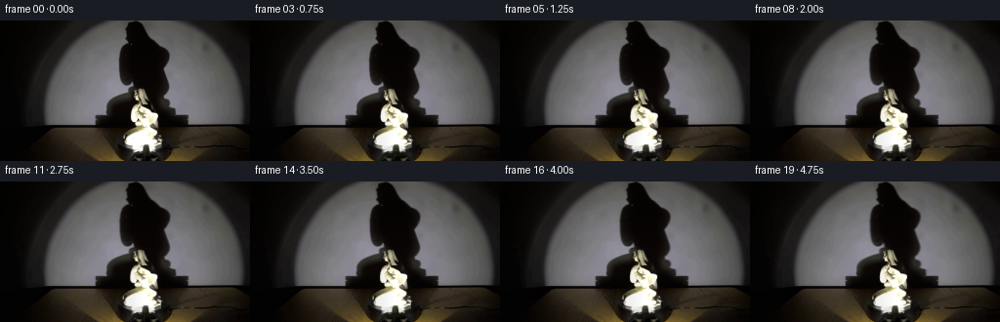
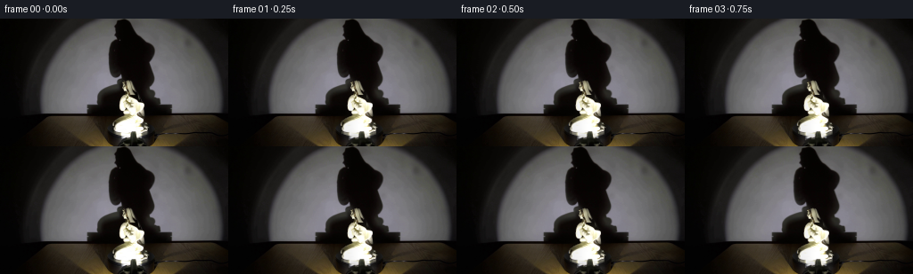

CODING AGENTS AS PIXEL WORLD MODELS
traex/DeepSeek-V4.1-Flash · 0083
点击播放 · 原生 RGB 像素
逐轮保存的候选
回放视频、检查图与代码变化。
每份候选均可单独播放。实际图片检查记录在下方工具轨迹中。
候选 01播放与检查图
点击播放 · 原生 RGB 像素


展开代码变化
--- 上一保存版本
+++ 本次保存版本
@@ -0,0 +1,210 @@
+from pathlib import Path
+
+import cv2
+import numpy as np
+from PIL import Image
+
+import artifact_io
+
+
+CASE_DIR = Path(__file__).resolve().parent
+WIDTH, HEIGHT = 256, 144
+FRAME_COUNT = 20
+FPS = 4
+
+
+def _smoothstep(edge0, edge1, value):
+ t = np.clip((value - edge0) / (edge1 - edge0), 0.0, 1.0)
+ return t * t * (3.0 - 2.0 * t)
+
+
+def _statue_mask(image):
+ """Isolate the bright porcelain figure from the dark gallery plate."""
+ gray = cv2.cvtColor(image, cv2.COLOR_RGB2GRAY)
+ h, w = gray.shape
+ mask = np.full((h, w), cv2.GC_BGD, np.uint8)
+ mask[64:138, 123:170] = cv2.GC_PR_BGD
+ mask[69:136, 126:167] = cv2.GC_PR_FGD
+
+ yy, xx = np.indices(gray.shape)
+ bright_seed = (
+ (gray > 62)
+ & (xx >= 126)
+ & (xx <= 166)
+ & (yy >= 69)
+ & (yy <= 136)
+ )
+ mask[bright_seed] = cv2.GC_FGD
+ bg_model = np.zeros((1, 65), np.float64)
+ fg_model = np.zeros((1, 65), np.float64)
+ cv2.grabCut(
+ image,
+ mask,
+ (123, 64, 47, 74),
+ bg_model,
+ fg_model,
+ 10,
+ cv2.GC_INIT_WITH_MASK,
+ )
+
+ candidate = np.isin(mask, [cv2.GC_FGD, cv2.GC_PR_FGD]).astype(np.uint8)
+ count, labels, stats, _ = cv2.connectedComponentsWithStats(candidate, 8)
+ if count > 1:
+ areas = stats[1:, cv2.CC_STAT_AREA]
+ candidate = (labels == 1 + int(np.argmax(areas))).astype(np.uint8)
+
+ contours, _ = cv2.findContours(
+ candidate, cv2.RETR_EXTERNAL, cv2.CHAIN_APPROX_SIMPLE
+ )
+ filled = np.zeros_like(candidate)
+ cv2.drawContours(filled, contours, -1, 1, cv2.FILLED)
+
+ # Keep the antialiased porcelain edge, but reject isolated low-light noise.
+ soft = cv2.GaussianBlur(filled.astype(np.float32), (0, 0), 0.62)
+ soft *= _smoothstep(18.0, 42.0, gray)
+ soft *= (xx >= 124) & (xx <= 168) & (yy >= 66) & (yy <= 138)
+ return np.clip(soft, 0.0, 1.0)
+
+
+def _clean_plate(image, alpha):
+ """Remove the foreground statue while retaining the plinth and wall."""
+ mask = (alpha > 0.015).astype(np.uint8) * 255
+ mask = cv2.dilate(mask, np.ones((3, 3), np.uint8), iterations=1)
+ bgr = cv2.cvtColor(image, cv2.COLOR_RGB2BGR)
+ repaired = cv2.inpaint(bgr, mask, 7, cv2.INPAINT_TELEA)
+ repaired = cv2.cvtColor(repaired, cv2.COLOR_BGR2RGB).astype(np.float32)
+
+ # The plinth is smooth and low-frequency. A tiny local blur across the
+ # repaired footprint prevents inpaint streaks from reading as geometry.
+ blur = cv2.GaussianBlur(repaired, (0, 0), 2.2)
+ footprint = cv2.GaussianBlur(mask.astype(np.float32) / 255.0, (0, 0), 2.2)
+ footprint = np.clip(footprint * 1.8, 0.0, 1.0)[..., None]
+ return repaired * (1.0 - footprint) + blur * footprint
+
+
+def _source_layers(image):
+ alpha = _statue_mask(image)
+ plate = _clean_plate(image, alpha)
+ foreground = np.clip(
+ (image.astype(np.float32) - plate * (1.0 - alpha[..., None]))
+ / np.maximum(alpha[..., None], 0.08),
+ 0.0,
+ 255.0,
+ )
+ return plate, foreground, alpha
+
+
+def _rotate_layer(layer, alpha, angle):
+ """Render a compact 2.5D turntable view of the porcelain figure."""
+ h, w = alpha.shape
+ yy, xx = np.indices((h, w), dtype=np.float32)
+ cx = 146.6
+ cy = 102.0
+
+ # The apparent width and horizontal surface texture follow the turn.
+ width_scale = 0.94 + 0.075 * np.cos(angle)
+ horizontal = xx - cx
+ surface = np.sin(angle) * 2.4
+ warped_x = cx + horizontal / width_scale + surface
+
+ # A small perspective tilt keeps the turn from looking like a paper slide.
+ warped_x += np.sin(angle * 0.92) * (yy - cy) * 0.010
+ warped_y = yy + np.cos(angle) * (yy - cy) * 0.0035
+
+ map_x = warped_x.astype(np.float32)
+ map_y = warped_y.astype(np.float32)
+ rgb = cv2.remap(
+ layer,
+ map_x,
+ map_y,
+ interpolation=cv2.INTER_CUBIC,
+ borderMode=cv2.BORDER_REFLECT_101,
+ )
+ a = cv2.remap(
+ alpha,
+ map_x,
+ map_y,
+ interpolation=cv2.INTER_CUBIC,
+ borderMode=cv2.BORDER_CONSTANT,
+ borderValue=0,
+ )
+
+ # Move the glaze highlight across the curved porcelain as it turns.
+ local_x = (xx - cx) / 19.0
+ highlight = np.exp(-((local_x - 0.36 * np.sin(angle)) / 0.48) ** 2)
+ highlight *= _smoothstep(68.0, 84.0, yy) * (1.0 - _smoothstep(127.0, 137.0, yy))
+ rgb = rgb * (0.975 + 0.045 * np.cos(angle) * local_x[..., None])
+ rgb += highlight[..., None] * np.array([7.0, 6.8, 6.0], np.float32)
+
+ # Rotating the figurine also rotates its contact area on the plinth.
+ contact = np.exp(
+ -(((xx - (cx + 1.2 * np.sin(angle))) / 14.0) ** 2)
+ - (((yy - 131.0) / 2.5) ** 2)
+ )
+ contact *= _smoothstep(112.0, 127.0, yy)
+ rgb *= 1.0 - 0.10 * contact[..., None]
+ return np.clip(rgb, 0.0, 255.0), np.clip(a, 0.0, 1.0)
+
+
+def _wall_and_plinth_animation(plate, phase):
+ """Move the projected wall shadow and a faint reflection on the plinth."""
+ out = plate.copy()
+ yy, xx = np.indices((HEIGHT, WIDTH), dtype=np.float32)
+ turn = np.sin(phase)
+
+ # The large cast shadow is strongest near the upper wall and broadens as it
+ # approaches the plinth. Shift it as a continuous optical field.
+ wall_weight = _smoothstep(112.0, 78.0, yy) * _smoothstep(1.0, 8.0, yy)
+ x_weight = _smoothstep(105.0, 120.0, xx) * (1.0 - _smoothstep(174.0, 190.0, xx))
+ shift = turn * (2.4 + 1.2 * (yy / 107.0))
+ shifted = cv2.remap(
+ out,
+ (xx - shift).astype(np.float32),
+ yy.astype(np.float32),
+ interpolation=cv2.INTER_LINEAR,
+ borderMode=cv2.BORDER_REFLECT_101,
+ )
+ blend = np.clip(wall_weight * x_weight, 0.0, 1.0)[..., None]
+ out = out * (1.0 - 0.76 * blend) + shifted * (0.76 * blend)
+
+ # A restrained moving sheen reveals the black plinth's clockwise rotation.
+ cx, cy = 144.0, 124.0
+ theta = np.arctan2((yy - cy) / 18.0, (xx - cx) / 105.0)
+ radius = np.sqrt(((xx - cx) / 105.0) ** 2 + ((yy - cy) / 18.0) ** 2)
+ rim = np.exp(-((radius - 0.88) / 0.10) ** 2)
+ sweep = np.exp(-((np.mod(theta - phase * 0.7 + np.pi, 2 * np.pi) - np.pi) / 0.24) ** 2)
+ plinth_weight = _smoothstep(108.0, 116.0, yy) * (1.0 - _smoothstep(140.0, 146.0, yy))
+ glint = (rim * sweep * plinth_weight)[..., None]
+ out += glint * np.array([13.0, 10.5, 7.0], np.float32)
+
+ # A second, slower sweep in the broad top face gives the platform volume.
+ top = np.exp(-(((yy - 117.0) / 8.0) ** 2))
+ top *= _smoothstep(46.0, 74.0, xx) * (1.0 - _smoothstep(210.0, 236.0, xx))
+ face_sweep = 0.5 + 0.5 * np.cos(theta * 1.7 - phase * 0.55)
+ out += (top * face_sweep * 2.2)[..., None] * np.array([1.0, 0.82, 0.62], np.float32)
+ return np.clip(out, 0.0, 255.0)
+
+
+def generate():
+ source = np.asarray(Image.open(CASE_DIR / "first_frame.png").convert("RGB"))
+ plate, layer, alpha = _source_layers(source)
+ frames = np.empty((FRAME_COUNT, HEIGHT, WIDTH, 3), np.uint8)
+ frames[0] = source
+
+ for index in range(1, FRAME_COUNT):
+ time = index / FPS
+ # A 28 degree clockwise turn over the five-second shot.
+ angle = np.deg2rad(28.0 * time / 5.0)
+ moving_layer, moving_alpha = _rotate_layer(layer, alpha, angle)
+ frame = _wall_and_plinth_animation(plate, angle)
+ frame = frame * (1.0 - moving_alpha[..., None]) + moving_layer * moving_alpha[..., None]
+
+ # Gentle exposure response as the spotlight catches the turning figure.
+ frame *= 0.995 + 0.005 * np.cos(angle * 1.5)
+ frames[index] = np.clip(frame + 0.5, 0, 255).astype(np.uint8)
+
+ artifact_io.save(frames, CASE_DIR)
+
+
+if __name__ == "__main__":
+ generate()
可观测工具轨迹
实际执行的命令与返回图片。
命令 1exit 0
/bin/bash -c "pwd && rg --files -g '"'!*__pycache__*'"'"
命令 2exit 0
/bin/bash -c "sed -n '1,240p' prompt.txt"
命令 3exit 0
/bin/bash -c "sed -n '1,320p' GENERATION_RULES.md"
命令 4exit 0
/bin/bash -c "find . -maxdepth 2 -type f -printf '%p %s bytes\\n' | sort"
命令 5exit 0
/bin/bash -c "sed -n '1,260p' artifact_io.py"
命令 6exit 0
/bin/bash -c "sed -n '1,260p' player_template.html"
命令 7exit 0
/bin/bash -c "python - <<'PY'
from PIL import Image
import numpy as np
im=np.array(Image.open('first_frame.png').convert('RGB'))
print(im.shape, im.dtype, im.min(), im.max())
print('mean',im.mean((0,1)), 'median',np.median(im.reshape(-1,3),0))
# most common colors exact
u,c=np.unique(im.reshape(-1,3),axis=0,return_counts=True)
ix=np.argsort(c)[-20:][::-1]
for i in ix: print(tuple(u[i]), int(c[i]))
# block means 16x9 or 32x18
for by in range(0,144,16):
print(' '.join('%02x%02x%02x'%tuple(im[by:by+16,x:x+16].mean((0,1)).astype(int)) for x in range(0,256,16)))
PY"命令 8exit 0
/bin/bash -c "python - <<'PY'
from PIL import Image
import numpy as np
im=np.array(Image.open('first_frame.png').convert('RGB')).astype(float)
lum=im@np.array([.2126,.7152,.0722])
# downsample 2x2 mean, map luminance chars
small=lum.reshape(72,2,128,2).mean((1,3))
chars=' .:-=+*#%@'
for row in small:
print(''.join(chars[min(9,int(v/256*10))] for v in row))
PY"命令 9exit 0
/bin/bash -c "python - <<'PY'
from PIL import Image
import numpy as np
from scipy import ndimage
im=np.array(Image.open('first_frame.png').convert('RGB')).astype(np.float32)
lum=im.mean(2)
# summary per rows/cols quantiles
print('row min p10 p25 p50 p75 p90 p99 max')
for y in range(0,144,8):
a=lum[y:y+8]
print(f'{y:3d}-{y+7:3d}', *[f'{np.percentile(a,p):6.1f}' for p in (0,10,25,50,75,90,99,100)])
print('col chunks')
for x in range(0,256,16):
a=lum[:,x:x+16]
print(f'{x:3d}', *[f'{np.percentile(a,p):6.1f}' for p in (10,25,50,75,90,99)])
# threshold components
for th in [40,60,80,100,120,150,180,210]:
m=lum>th
lab,n=ndimage.label(m)
ss=ndimage.sum(m,lab,range(1,n+1))
ix=np.argsort(ss)[-8:][::-1]
comps=[]
for i in ix:
if ss[i]<10: continue
ys,xs=np.where(lab==i+1)
comps.append((int(ss[i]),(xs.min(),ys.min(),xs.max(),ys.max())))
print(th, comps)
PY"命令 10exit 0
/bin/bash -c "python - <<'PY'
from PIL import Image
import numpy as np
im=np.array(Image.open('first_frame.png').convert('RGB')).astype(float)
lum=im.mean(2)
chars=' .,:;irsXA253hMHGS#9B&@'
# 2x1 sampling cropped region
for y in range(50,144):
line=''
for x in range(70,196,2):
v=lum[y:y+1,x:x+2].mean()
line+=chars[min(len(chars)-1,int(v/256*len(chars)))]
print(f'{y:3d} {line}')
PY"命令 11exit 0
/bin/bash -c "python - <<'PY'
from PIL import Image
import numpy as np
im=np.array(Image.open('first_frame.png').convert('RGB')).astype(float)
lum=im.mean(2)
for th in [80,100,120,150,180]:
print('\\nTH',th,'x120..175 y70..139')
for y in range(70,140):
s=''
for x in range(118,178):
v=lum[y,x]
s += '@' if v>220 else '#' if v>180 else 'O' if v>150 else '+' if v>120 else ':' if v>100 else '.' if v>80 else ' '
print(f'{y:3d} {s}')
PY"命令 12exit 0
/bin/bash -c "python - <<'PY'
from PIL import Image
import numpy as np
im=np.array(Image.open('first_frame.png').convert('RGB'))
for y in [60,70,80,90,100,106,107,108,110,120,130,135,140]:
print('\\ny',y)
# runs by 8px mean lum
for x in range(0,256,8):
v=im[y,x:x+8].mean()
print(f'{x:3d}:{v:5.1f}',end=' ')
print()
PY"命令 13exit 0
/bin/bash -c "python - <<'PY'
from PIL import Image
import numpy as np
im=np.array(Image.open('first_frame.png').convert('RGB'))
lum=im.mean(2)
for y in range(60,138):
xs=np.where((lum[y]>140)&(np.arange(256)>=115)&(np.arange(256)<180))[0]
runs=[]
if len(xs):
b=np.r_[0,np.where(np.diff(xs)>1)[0]+1,len(xs)]
runs=[(int(xs[a]),int(xs[b-1])) for a,b in zip(b[:-1],b[1:]) if b-a>=1]
print(f'{y:3d}: {runs}')
PY"命令 14exit 0
/bin/bash -c "python - <<'PY' mods=['numpy','scipy','PIL','cv2','imageio','skimage'] for m in mods: try: mod=__import__(m); print(m, getattr(mod,'__version__','ok')) except Exception as e: print(m,'MISSING',e) PY ffmpeg -version | head -n 2 || true"
命令 15exit 0
/bin/bash -c "python - <<'PY'
from PIL import Image
import numpy as np
im=np.array(Image.open('first_frame.png').convert('RGB')).astype(float)
# print RGB patches as chars separately based on channel mapping around statue
for y in range(84,138,2):
s=''
for x in range(120,172,2):
p=im[y:y+2,x:x+2].mean((0,1))
lum=p.mean()
if lum<20: ch=' '
elif lum<60: ch='.'
elif lum<100: ch=':'
elif lum<140: ch='+'
elif lum<180: ch='o'
elif lum<220: ch='O'
else: ch='@'
s+=ch
print(f'{y:3d} {s}')
# Determine brightest object mask row bounds and widths
PY"命令 16exit 0
/bin/bash -c "python - <<'PY'
from PIL import Image
import numpy as np, cv2
im=np.array(Image.open('first_frame.png').convert('RGB'))
g=cv2.cvtColor(im,cv2.COLOR_RGB2GRAY).astype(np.float32)
# gradient magnitude visual stats and ascii
gx=cv2.Sobel(g,cv2.CV_32F,1,0,ksize=3); gy=cv2.Sobel(g,cv2.CV_32F,0,1,ksize=3)
mag=np.hypot(gx,gy)
for y in range(95,140):
s=''
for x in range(20,250,4):
v=mag[y,x:x+4].mean()
s+=' ' if v<15 else '.' if v<30 else ':' if v<60 else '+' if v<100 else '#' if v<160 else '@'
print(f'{y:3d} {s}')
PY"命令 17exit 0
/bin/bash -c "python - <<'PY'
from PIL import Image
import numpy as np
im=np.array(Image.open('first_frame.png').convert('RGB'))
for y in [100,104,107,108,109,110,120,130,135]:
print('\\ny',y)
for x in range(20,240,4):
p=im[y,x:x+4].mean(0)
print(f'{x:3d}:{p.mean():5.1f}/{p.max()-p.min():4.1f}',end=' ')
print()
PY"命令 18exit 0
/bin/bash -c "python - <<'PY'
from PIL import Image
import numpy as np, cv2
im=np.array(Image.open('first_frame.png').convert('RGB'))
g=cv2.cvtColor(im,cv2.COLOR_RGB2GRAY)
for th in [40,50,60,70,80,90,100,110,120,130,140,160,180,200]:
m=(g>th).astype(np.uint8)
n,lab,stats,cent=cv2.connectedComponentsWithStats(m,8)
comps=[]
for i in range(1,n):
x,y,w,h,a=stats[i]
if 110<=x<=140 and 70<=y<=120 and a>20:
comps.append((a,x,y,w,h))
print(th,sorted(comps,reverse=True)[:5])
PY"命令 19exit 0
/bin/bash -c "python - <<'PY'
from PIL import Image
import numpy as np
im=np.array(Image.open('first_frame.png').convert('RGB'))
lum=im.mean(2)
# print x120..172 y55..140 at 1 pixel, threshold buckets
chars=' .:-=+*#%@'
for y in range(55,141):
s=''
for x in range(118,174):
v=lum[y,x]
s += chars[min(9,int(v/256*10))]
print(f'{y:3d} {s}')
PY"命令 20exit 0
/bin/bash -c "python - <<'PY'
from PIL import Image
import numpy as np
im=np.array(Image.open('first_frame.png').convert('RGB'))
for y in [0,10,20,30,40,50,60,70,80,90,100,106,110,120,130,143]:
print('\\ny',y)
for x in range(0,256,8):
v=im[y:y+1,x:x+8].mean()
print(f'{x:3d}:{v:5.1f}',end=' ')
print()
PY"命令 21exit 0
/bin/bash -c "python - <<'PY'
from PIL import Image
import numpy as np, cv2
im=np.array(Image.open('first_frame.png').convert('RGB'))
H,W=im.shape[:2]
g=cv2.cvtColor(im,cv2.COLOR_RGB2GRAY)
roi=(slice(60,138),slice(120,172))
gg=g[roi]
# init grabcut in full but use roi bbox
mask=np.full((H,W),cv2.GC_BGD,np.uint8)
mask[62:137,124:169]=cv2.GC_PR_BGD
mask[70:135,127:166]=cv2.GC_PR_FGD
mask[(g>65)&(np.indices(g.shape)[1]>=126)&(np.indices(g.shape)[1]<=167)&(np.indices(g.shape)[0]>=66)&(np.indices(g.shape)[0]<=136)]=cv2.GC_FGD
bgd=np.zeros((1,65),np.float64); fgd=np.zeros((1,65),np.float64)
cv2.grabCut(im,mask,(124,62,45,75),bgd,fgd,8,cv2.GC_INIT_WITH_MASK)
a=np.isin(mask,[cv2.GC_FGD,cv2.GC_PR_FGD]).astype(np.uint8)
# keep component touching center
n,lab,stats,c=cv2.connectedComponentsWithStats(a,8)
i=lab[105,145]
a=(lab==i).astype(np.uint8)
# fill holes
contours,_=cv2.findContours(a,cv2.RETR_EXTERNAL,cv2.CHAIN_APPROX_SIMPLE)
filled=np.zeros_like(a); cv2.drawContours(filled,contours,-1,1,-1)
print('components',n,'touch',i,'area',a.sum(),'filled',filled.sum())
ys,xs=np.where(filled>0);print(xs.min(),xs.max(),ys.min(),ys.max())
# ascii filled
for y in range(60,138):
s=''
for x in range(118,174,2):
v=filled[y:y+2,x:x+2].mean()
s += ' ' if v<.1 else '.' if v<.4 else '+' if v<.8 else '#'
print(f'{y:3d} {s}')
# save debug alpha
out=im.copy(); out[filled>0]=(out[filled>0]*.4+np.array([255,0,0])*.6).astype(np.uint8)
Image.fromarray(out).save('.tmp/mask_debug.png')
PY"命令 22exit 0
/bin/bash -c "python - <<'PY'
from PIL import Image
import numpy as np
im=np.array(Image.open('first_frame.png').convert('RGB')).astype(float)
lum=im.mean(2)
# columns boundary transitions of wall left and right by threshold >60 and row summaries
for y in [0,20,40,60,80,100,105]:
# smooth per x
v=lum[y]
print(y,[(x,round(v[x],1)) for x in range(0,256,8)])
PY"命令 23exit 0
/bin/bash -c "python - <<'PY'
from PIL import Image
import numpy as np
im=np.array(Image.open('first_frame.png').convert('RGB')).astype(float)
h,w=im.shape[:2]
y,x=np.mgrid[0:h,0:w]
mask=(y<107)&(x>=42)&(x<=246)&((x<92)|(x>202))
# fit polynomial terms x,y normalized
xn=(x-144)/100; yn=(y-53)/54
terms=[]
for deg in [3,4,5,6]:
terms=[]
for i in range(deg+1):
for j in range(deg+1-i): terms.append((xn**i)*(yn**j))
A=np.stack([t[mask] for t in terms],1)
pred=np.zeros_like(im)
for c in range(3):
coef=np.linalg.lstsq(A,im[:,:,c][mask],rcond=None)[0]
pred[:,:,c]=np.stack([t for t in terms],-1)@coef
pred=np.clip(pred,0,255)
# errors known, predicted bright central values
err=np.abs(pred-im)[mask]
print('deg',deg,'mae',err.mean(),'p95',np.percentile(err,95))
for yy in [0,20,40,60,80,100]:
print(yy,[int(pred[yy,xx].mean()) for xx in [50,80,110,130,145,160,190,220,240]])
PY"命令 24exit 0
/bin/bash -c "python - <<'PY'
from PIL import Image
import numpy as np
im=np.array(Image.open('first_frame.png').convert('RGB')).astype(float)
# sample color ratios to infer hue in wall, shadow, floor, plinth
regions={'wallL':(40,70,70,90),'wallR':(200,70,230,90),'shadowTop':(128,30,170,80),'shadowMid':(120,70,150,100),'floorL':(50,120,100,135),'floorR':(180,120,220,135),'plinthL':(60,112,90,125),'plinthC':(80,120,110,130),'statue':(135,95,160,110)}
for n,(x0,y0,x1,y1) in regions.items():
a=im[y0:y1,x0:x1]
print(n,'mean',a.mean((0,1)).round(1),'med',np.median(a.reshape(-1,3),0),'max',a.max((0,1)).round(1))
PY"命令 25exit 0
/bin/bash -c "python - <<'PY'
from PIL import Image
import numpy as np
im=np.array(Image.open('first_frame.png').convert('RGB'))
# inspect values around central shadow/wall boundary at y rows
for y in [0,10,20,30,40,50,60,70,80,90,100,106,107,108,109]:
print('\\ny',y)
for x in range(100,190,2):
v=im[y,x].mean()
print(f'{x}:{v:3.0f}',end=' ')
print()
PY"命令 26exit 0
/bin/bash -c "python - <<'PY'
from PIL import Image
import numpy as np
im=np.array(Image.open('first_frame.png').convert('RGB'))
g=im.mean(2)
# ascii crop 100:180 x 55:140 at 1px, 2 luminance scales
chars=' .:-=+*#%@'
for y in range(55,141):
line=''
for x in range(100,181):
v=g[y,x]
line += chars[min(9,int(v/256*10))]
print(f'{y:3d} {line}')
PY"命令 27exit 0
/bin/bash -c "python - <<'PY'
from PIL import Image
import numpy as np
im=np.array(Image.open('first_frame.png').convert('RGB'))
# print cropped image base64? no. quantize colors and generate coarse ascii with channels
# object approx mask based on luminance threshold 90 within box, print intervals
lum=im.mean(2)
for y in range(65,138):
xs=np.where(lum[y]>90)[0]
xs=xs[(xs>=115)&(xs<180)]
if len(xs):
# groups
d=np.where(np.diff(xs)>1)[0]
starts=np.r_[xs[0],xs[d+1]]; ends=np.r_[xs[d],xs[-1]]
print(y, list(zip(starts.tolist(),ends.tolist())))
PY"命令 28exit 0
/bin/bash -c "python - <<'PY'
from PIL import Image
import numpy as np
im=np.array(Image.open('first_frame.png').convert('RGB')).astype(float)
lum=im.mean(2)
# print each row 115..180 region with char per pixel at reduced char set focusing 55..140
chars=' .,:;+*#%@'
for y in range(60,137):
s=''
for x in range(120,170):
v=lum[y,x]
s+=chars[min(9,int(v/25.6))]
print(f'{y:3d} {s}')
PY"命令 29exit 0
/bin/bash -c "python - <<'PY'
from PIL import Image
import numpy as np, cv2
im=np.array(Image.open('first_frame.png').convert('RGB'))
g=cv2.cvtColor(im,cv2.COLOR_RGB2GRAY)
# display edge magnitude coarse for y100..144, x0..256 at 2px blocks
e=cv2.Canny(g,20,60)
for y in range(100,144):
s=''
for x in range(0,256,2):
v=e[y:y+1,x:x+2].max()
s+='#' if v else ' '
print(f'{y:3d} {s}')
PY"命令 30exit 0
/bin/bash -c "python - <<'PY'
from PIL import Image
import numpy as np
im=np.array(Image.open('first_frame.png').convert('RGB')).astype(float)
# print exact luma and RGB ranges for region statue; also compare reflection.
g=im.mean(2)
# Find top/bottom of object and bounding boxes threshold >90 and >120 within x115..180
for th in [80,100,120,140,160,180,200]:
m=g[60:138,115:180]>th
ys,xs=np.where(m)
print(th, (xs.min()+115,xs.max()+115,ys.min()+60,ys.max()+60), 'area',m.sum())
# candidate plinth ellipse mask based on luminance > 12 under y105 maybe bounding
for th in [10,15,20,25,30,35,40]:
m=g[106:144,20:245]>th
ys,xs=np.where(m)
print('floor',th,(xs.min()+20,xs.max()+20,ys.min()+106,ys.max()+106),m.sum())
PY"命令 31exit 0
/bin/bash -c 'python generate.py'
命令 32exit 0
/bin/bash -c 'ls -lh inspection.png transition_check.png pixels.npz index.html frames/00.png frames/19.png'
命令 33exit 0
/bin/bash -c "python - <<'PY'
from PIL import Image
import numpy as np
src=np.array(Image.open('first_frame.png').convert('RGB'))
frames=np.stack([np.array(Image.open(f'frames/{i:02d}.png').convert('RGB')) for i in range(20)])
print('shape',frames.shape,'dtype',frames.dtype)
print('frame0 identical',np.array_equal(frames[0],src),'maxdiff',np.abs(frames[0].astype(int)-src.astype(int)).max())
d=np.abs(frames[1:].astype(int)-frames[:-1].astype(int))
print('consecutive mean/max changed pixels')
for i in range(19):
dd=np.abs(frames[i+1].astype(int)-frames[i].astype(int))
print(i,round(dd.mean(),3),np.count_nonzero(dd),round(dd.max(),1))
print('range means')
for i in [0,1,5,10,15,19]: print(i,frames[i].mean((0,1)).round(2))
PY"命令 34exit 0
/bin/bash -c "python - <<'PY'
from PIL import Image
import numpy as np
for idx in [0,1,5,10,15,19]:
im=np.array(Image.open(f'frames/{idx:02d}.png').convert('RGB'))
lum=im.mean(2)
# summarize center region movement using luma mass
print(idx,'mean statue box',lum[70:136,126:168].mean(),'min',lum[70:136,126:168].min(),'max',lum[70:136,126:168].max())
PY"命令 35exit 0
/bin/bash -c "python - <<'PY'
from PIL import Image
import numpy as np
for idx in [0,5,10,15,19]:
im=np.array(Image.open(f'frames/{idx:02d}.png').convert('RGB')).astype(float)
lum=im.mean(2)
print('\\nFRAME',idx)
chars=' .:-=+*#%@'
for y in range(64,139,2):
s=''
for x in range(118,172,1):
v=lum[y:y+2,x].mean()
s+=chars[min(9,int(v/256*10))]
print(f'{y:3d} {s}')
PY"命令 36exit 0
/bin/bash -c "python - <<'PY'
from PIL import Image
import numpy as np
for idx in [0,10,19]:
im=np.array(Image.open(f'frames/{idx:02d}.png').convert('RGB')).astype(float)
# save 4x nearest crops for local visual inspection
crop=Image.fromarray(im[60:140,110:180].astype(np.uint8)).resize((560,640),Image.Resampling.NEAREST)
crop.save(f'.tmp/crop_{idx:02d}.png')
# difference from frame0 in box stats
if idx:
src=np.array(Image.open('frames/00.png').convert('RGB')).astype(float)
d=np.abs(im-src).mean(2)
print(idx,'box diff',d[60:140,110:180].mean(),'overall',d.mean(),'max',d.max())
PY"保存候选 1 份；完成命令 36 次；可验证图片返回 0 张。原始 API 响应与完整日志保留在本地。